BStudio — студия записи видеолекций прямо в браузере: слайды, камера, суфлёр и запись в одном окне. Выбери, что нужно, — покажем по шагам.
Нужен Chrome или Edge на компьютере. Safari не подойдёт. Устанавливать ничего не надо — студия открывается по ссылке.
Слайды не нужны: студия покажет то, что на экране, добавит камеру и запишет всё в одно видео.
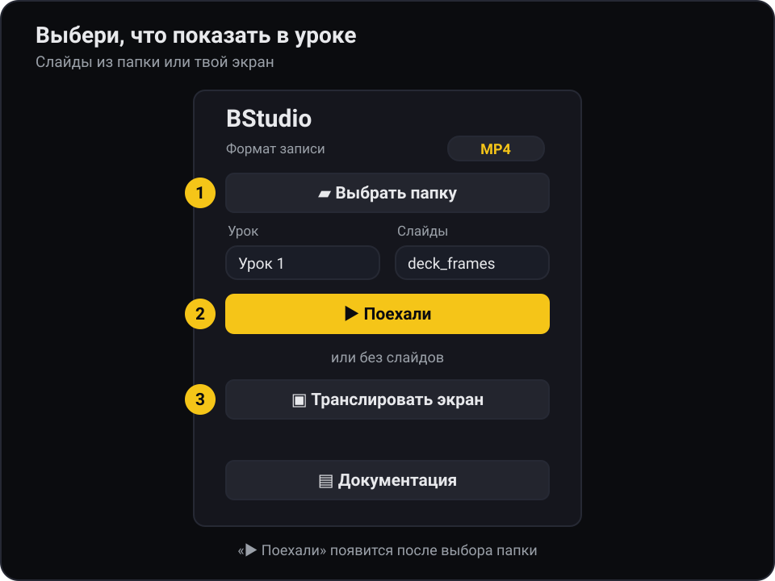
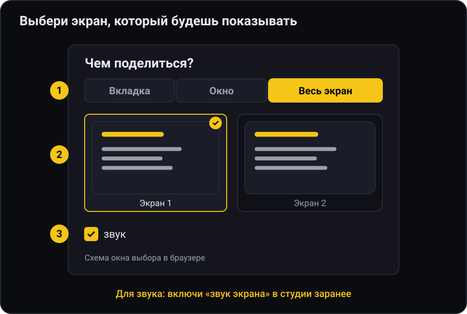
Если видишь «⚠ экран без звука» — выключи «🖥 экран», включи снова и поставь галочку.
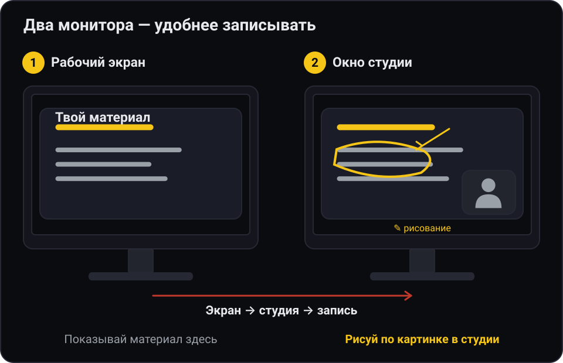
Не транслируй монитор, на котором открыта студия — получится «зеркальный коридор»: картинка в картинке до бесконечности.
Рисовать можно только в окне студии. Поверх самого рабочего стола или другой программы рисунок не появится.
macOS: при первом запуске разреши Chrome запись экрана: Системные настройки → Конфиденциальность и безопасность → Запись экрана и системного звука. После этого перезапусти Chrome.
Посреди лекции со слайдами экран тоже можно показать: кнопка «🖥 экран» или клавиша S. Нажмёшь ещё раз — вернётся слайд.
Есть слайды-картинки, говоришь своими словами. Студия показывает слайд, тебя в углу и записывает.
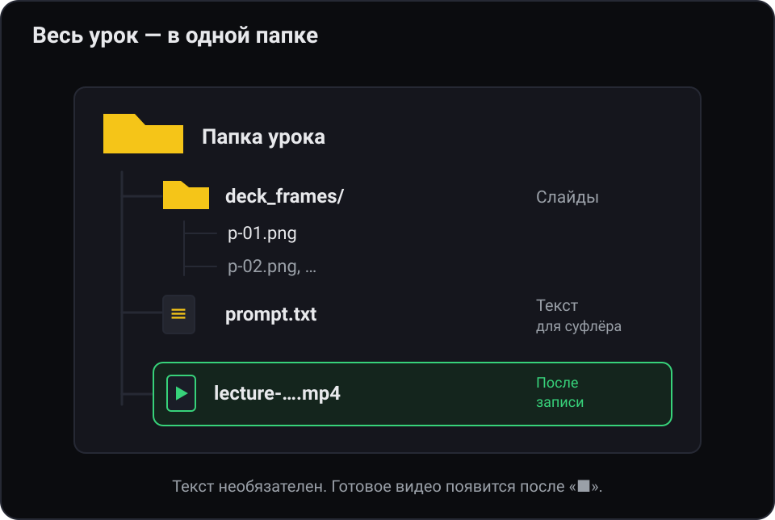
03-script.md не нужен.deck_frames/ с p-01.png, p-02.png…, PDF-файл или просто любая папка с картинками (порядок — по именам файлов).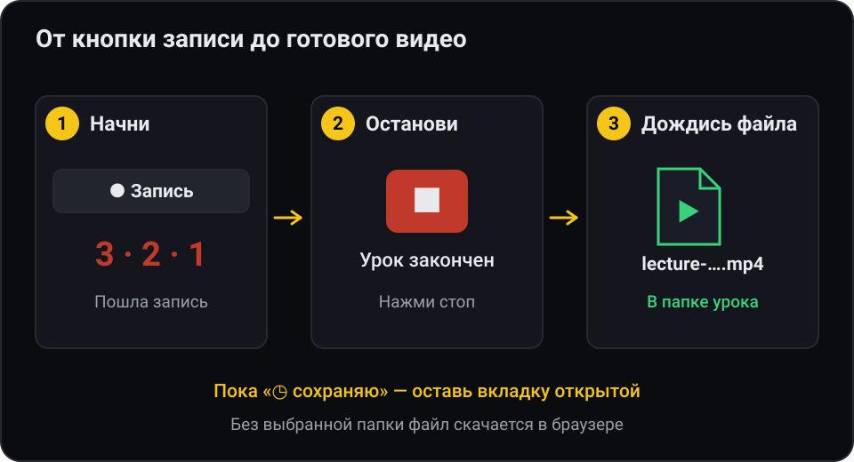
Если в уроке есть текст для суфлёра, а сейчас он не нужен, — спрячь суфлёр кнопкой «👁».
PDF открывается только с интернетом. Презентацию PowerPoint (PPTX) сначала сохрани как PDF или картинки.
Ошибся — нажми «⚑ отметка»: в файле отметок появится время, и при монтаже это место легко найти.
То же, что запись презентации, только сверху плывёт твой текст — читаешь, глядя почти в камеру.
03-script.md (имя именно такое).## Титульный слайд. Для каждой следующей картинки — строка-заголовок ### Слайд 1.1 — …, ### Слайд 1.2 — … и так далее (номер — два числа через точку), а под ней — что говорить. Блоки идут по порядку: первый — первой картинке, второй — второй. Пример ниже.## Титульный слайд Привет! Сегодня разберём, как записать лекцию. ### Слайд 1.1 — Что нужно Нужны две вещи: картинки слайдов и этот текст. Пустая строка — новый абзац. [P] Это короткая пауза. ### Слайд 1.2 — Как разложить Текст для третьей картинки.
Строки, которые начинаются с # или >, в суфлёр не попадают — это заголовки и заметки для себя. В этом примере три блока — значит, нужны три картинки: титул и ещё две. Готовый пример урока на 4 слайда лежит в папке example/ репозитория — скачай и попробуй.
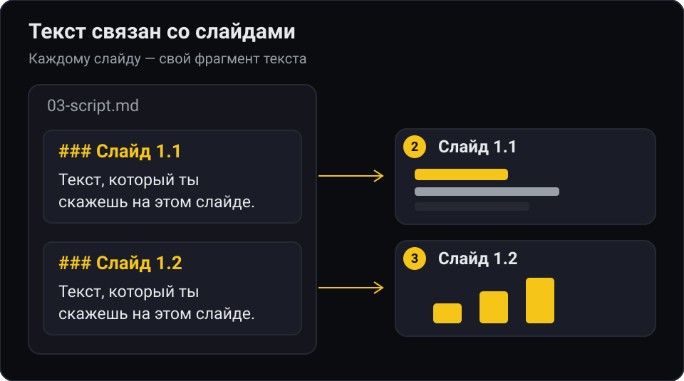
## Титульный слайд), поэтому ### Слайд 1.1 — вторая картинка, ### Слайд 1.2 — третья.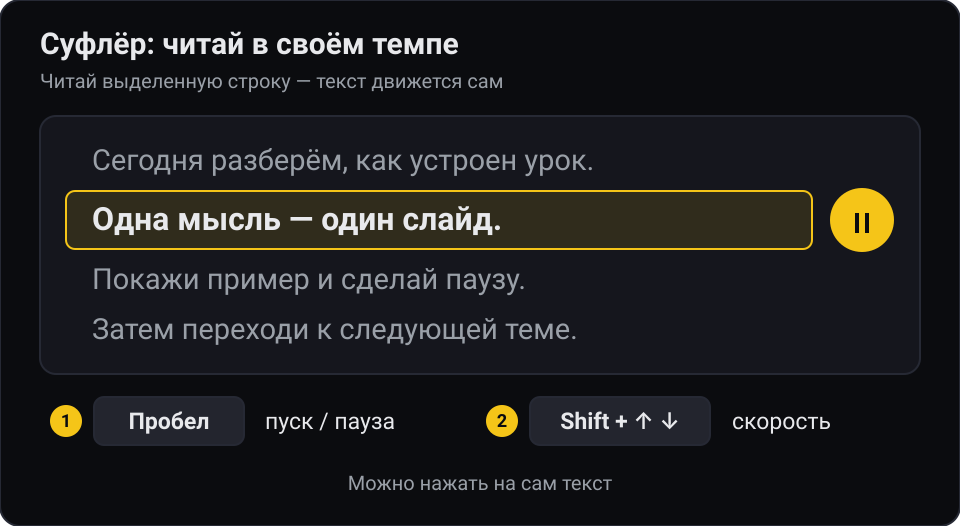
Взгляд в объектив. Поставь камеру прямо под суфлёром (кнопка-звёздочка в группе камера двигает её по кругу) — тогда, читая, ты смотришь почти в камеру.
Текст мелкий или крупный — «A−» / «A+» в группе суфлёр. Немного отстал — ↑ / ↓ подкручивают текст.
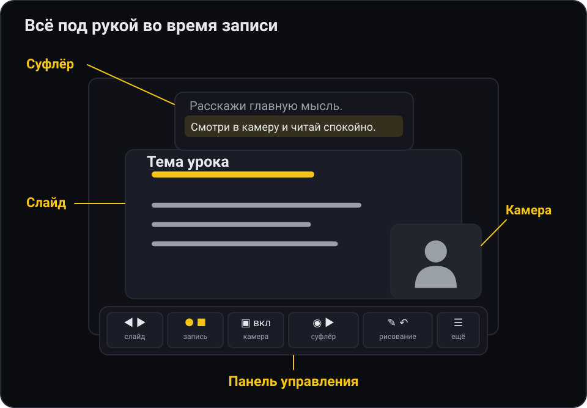
deck_frames/ с p-01.png, p-02.png…, PDF или любые картинки.03-script.md (как писать — в разделе «Лекция с суфлёром»).Урок без текста помечен в списке «— без речитатива»: суфлёра не будет, всё остальное работает.
В следующий раз папку не нужно искать: на стартовом экране будет «↩ Открыть последнюю папку».
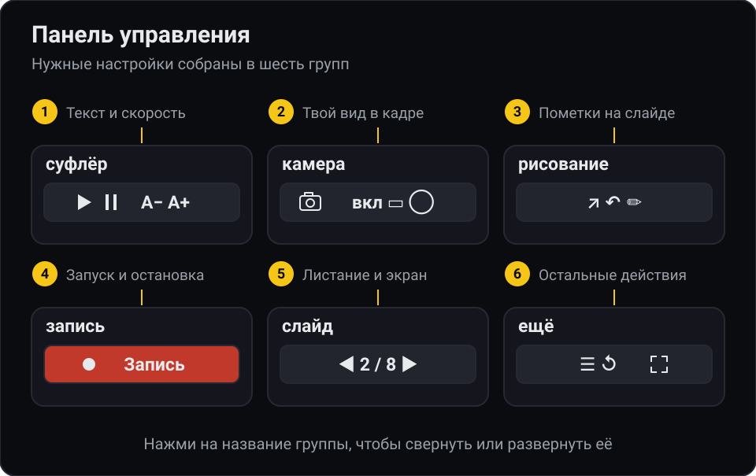
03-script.md).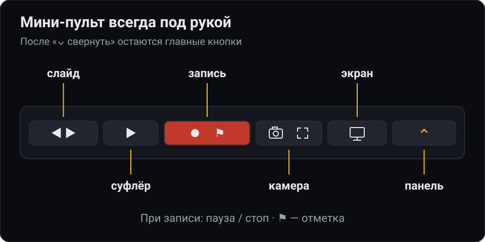
Нажми «⌄ свернуть» — панель спрячется, а внизу по центру останется маленький пульт: самое нужное, ничего не загораживает.
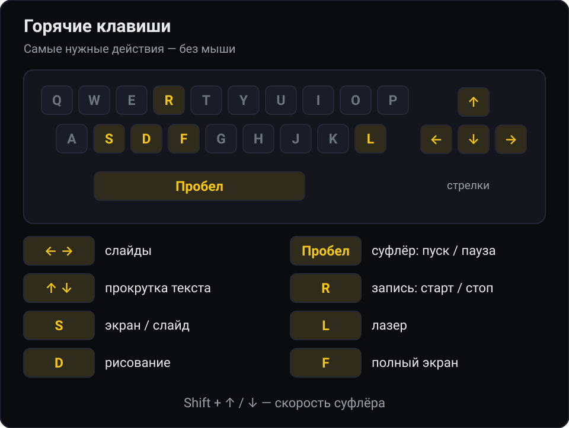
| Клавиша | Что делает |
|---|---|
| → / PageDown | следующий слайд |
| ← / PageUp | предыдущий слайд |
| Пробел | суфлёр: пуск / пауза |
| ↑ / ↓ | подкрутить текст суфлёра назад / вперёд |
| Shift+↑ / ↓ | суфлёр быстрее / медленнее |
| R | начать запись (с отсчётом 3-2-1); во время записи — остановить |
| S | экран вместо слайда / обратно |
| L | лазерная указка «🔴 курсор» |
| D | рисование «✏️ рисование» |
| Ctrl/Cmd+Z | отменить штрих (в режиме рисования) |
| F | полный экран |
Клавиши не работают на стартовом экране и пока курсор стоит в ползунке или списке — кликни по слайду. Пауза записи и отметка — только кнопками «⏸» и «⚑ отметка».
lecture-ГГГГ-ММ-ДД-ЧЧ-ММ-СС.mp4 (или .webm).….markers.txt с отметками, паузами и сменами слайдов: удобно для монтажа.После «⏹» на кнопке будет «⏳ сохраняю», а ниже — «готовлю файл для монтажа…». Не закрывай вкладку, пока не появится «сохранено».
Если файл не успел подготовиться, появится «🔁 подготовить для монтажа (N)» — нажми, студия доделает. Найти записи — «📂 показать в папке» (кнопка появляется после записи, если выбрана папка).
| Что случилось | Что сделать |
|---|---|
| «Нужен Chrome (или Edge)…», кнопка папки не нажимается | Открой студию в Chrome или Edge. Safari и Firefox не подходят. |
| Камера не включается | Разреши доступ к камере в окне браузера (значок в адресной строке). Закрой другие программы, которые держат камеру (Zoom, Teams). Открывай студию по ссылке https, а не как файл с диска. |
| «⚠ нет звука» | Разреши микрофон, выбери нужный в списке микрофонов в группе запись. |
| Экран не транслируется, на macOS ошибка | Системные настройки → Конфиденциальность и безопасность → Запись экрана и системного звука → включи Chrome и перезапусти его. |
| «⚠ экран без звука» | Выключи «🖥 экран», проверь «звук экрана», включи трансляцию снова и поставь галочку звука. |
| Картинка в картинке до бесконечности | Ты транслируешь монитор, где открыта студия. Выбери другой монитор или окно. |
| Клавиши не реагируют | Кликни по слайду: курсор остался в ползунке или списке. |
| Нет суфлёра | Проверь, что файл называется 03-script.md и лежит в папке урока, а заголовки — ### Слайд 1.1 — …. Или суфлёр спрятан — нажми «👁». |
| PPTX в списке, но не выбирается | Сохрани презентацию как PDF или картинки и положи в папку урока. |